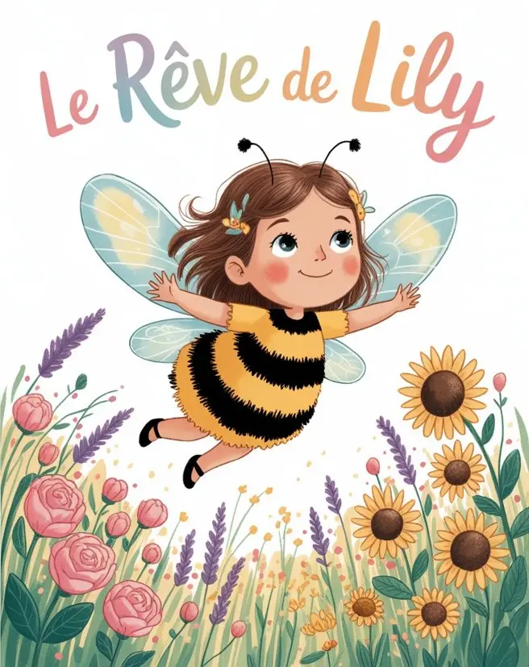

Le rêve de Lily, court texte pour enfants

Courte histoire pour enfants écrite fin 2025 dans le cadre d’un concours. Je n’ai pas eu de réponse de la maison d’édition, donc ils ne l'ont pas retenue. Tant pis pour eux !
Si je me sens inspirée un jour, je la complèterai avec des illustrations.
Environ 6 minutes de lecture.
Le rêve de Lily
Dans le jardin de l’école, les enfants jouent et rient. Ils soignent les peluches et leur donnent des cailloux à manger.
Lily, elle, construit un nid. Un tout petit nid douillet, au milieu des pâquerettes. Mais personne ne regarde. Personne ne lui prête son doudou à plumes pour le mettre dedans. Lily est triste. Elle se sent seule et un peu oubliée.
« Personne ne veut jouer avec moi… »
Alors Lily s’allonge dans l’herbe. Elle respire le doux parfum d’une fleur.
« Mmmm… ça sent bon ! »
Elle ferme les yeux. Le vent caresse son visage.
Soudain… ATCHOUM ! Une énorme secousse la fait trembler. La fleur grandit, grandit. Et tout autour de Lily, d’énormes pompons jaunes flottent dans l’air. Même les enfants sont devenus grands… comme des géants ! Lily ouvre d’immenses yeux.
« Bonjour, Petite Abeille ! » dit la fleur. « Tu veux goûter mon pollen ? Viens donc me chatouiller un peu ! »
« Je suis une abeille ? » demande Lily, surprise.
La fleur lui sourit. Oui, Lily s’est transformée en petite abeille ! Ses ailes brillent, légères comme des rubans. Et elle a des pattes riquiqui, toutes poilues.
Elle grimpe sur le gros cœur moelleux de la fleur.
« Miam ! C’est sucré et léger comme un nuage ! »
Lily se sent bien. La fleur rigole.
Mais soudain… une énorme main approche.
« Oh non » s’inquiète la fleur. « Petite Abeille, aide-moi ! »
Vite, vite, c’est la panique ! Lily s’envole, virevolte, tourne et tourne encore. Mais en un instant, la fleur est cueillie par l’enfant géant.
« Oh non… » murmure Lily. « Je suis perdue maintenant… »
Le cœur de Lily se serre. Elle se sent seule, sans repère. Alors une voix douce et rassurante l’appelle :
« Psst ! Par ici, Petite Abeille ! »
C’est un bourdon tout velu, avec des rayures jaunes et noires. Il vrombit doucement autour d’elle.
« Viens avec moi ! » dit-il. « Je vais te conduire dans un endroit sûr. »
Le bourdon montre le chemin à Lily, parmi les herbes et les pissenlits. Il zigzague et fait quelques haltes pour ramasser des boulettes de pollen. Les marguerites, les boutons d’or et les violettes voltigent autour de lui.
« Regarde toutes ces fleurs, Petite Abeille ! » bourdonne-t-il. « Elles t’attendent, sucrées et pleines de lumières. »
Mais le chemin n’est pas facile. Une rafale de vent secoue Lily. Elle doit battre des ailes de toutes ses forces. Le bourdon lui montre alors comment se laisser porter par l’air. Lily a très peur, mais elle est aussi excitée.
« Je peux le faire ! » s’écrie-t-elle.
Enfin, ils atteignent un petit coin tendre et collant pour goûter un peu de pollen. Le bourdon lui chuchote :
« Reprends des forces, Petite Abeille. Le monde est grand, il y a encore beaucoup de fleurs à visiter et d’amis à rencontrer. »
Lily se sent mieux. Elle retrouve le sourire et le cœur léger.
Après son goûter, Lily reprend son envol. Son ami le bourdon a raison, il y a beaucoup de choses à découvrir. Elle virevolte, danse et tourbillonne, légère et heureuse.
FLAP-FLAP-FLAP font ses ailes.
Un écureuil apparaît soudain, sautillant et curieux.
« Bonjour, Petite Abeille ! » chantonne-il.
« Bonjour, monsieur l’écureuil. » répond Lily.
L’écureuil renifle les fleurs autour de lui. Il se frotte doucement aux pétales et s’amuse à envoyer un peu de pollen dans l’air. Lily rit très fort et danse autour de lui. Ensemble, ils jouent à se cacher derrière les feuilles des grands arbres et à chatouiller les fleurs.
« Comme c’est rigolo ! »
Après quelques tours, Lily continue son chemin. Mais voilà qu’un énorme animal tout doux lui bloque la route. Elle le reconnaît, c’est un cheval ! Rieur, il balance sa queue et envoie Lily voler plus loin. Elle atterrit doucement entre les trèfles bleus et blancs. Elle se blottit dans leurs pétales, heureuse et rassurée. Elle sent que son doux rêve touche à sa fin…
Quand elle ouvre les yeux, le jardin de l’école est redevenu normal. Mais cette fois, elle ne se sent pas seule. Léo, un autre enfant, la regarde avec curiosité.
« Tu parles aux fleurs ? » lui demande-t-il.
« Oui ! Moi j’aime bien les fleurs ! Tu me montres ton doudou ? » répond Lily, confiante.
Et tous les deux commencent à jouer ensemble au milieu des fleurs.
Lily est contente. Elle a un nouvel ami. Et elle se souvient de la fleur géante, du bourdon qui l’a guidée, de l’écureuil espiègle et du cheval joueur. Toutes ces rencontres lui ont appris à se montrer courageuse et à s’amuser, quoiqu’il arrive.
Lily se sent légère et joyeuse. Elle est prête à découvrir encore plus de merveilles avec son nouveau copain Léo.